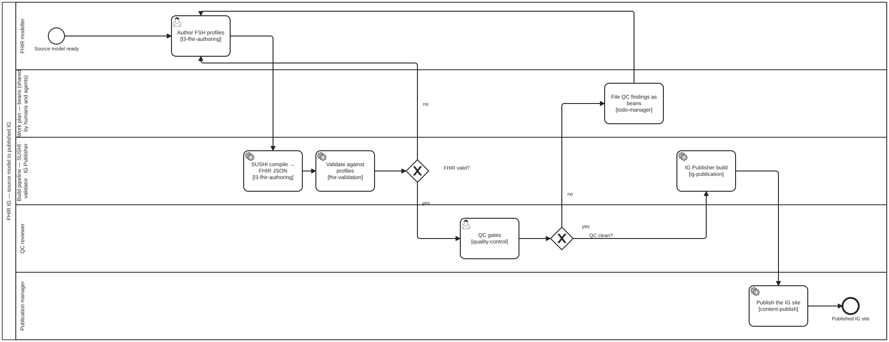

Generated from
fhir-harness/processes/content/l3-fhir-pipeline.bpmnbygen-processes-viz.ts— do not edit here. All processes
L3 FHIR IG pipeline
Process_L3Fhir · strict (defaulted) · 7 step(s)
How an L3 FHIR Implementation Guide is authored in FSH, built with SUSHI, the validator and the IG Publisher, reviewed and published, starting from a source model that is ready. Generic: what produces the source model is the layer above’s own process, which maps its model and then calls Process_L3Fhir. This one names no such model. folio-assistant — the generic L3 FHIR IG pipeline.
Source of truth: this file. Open it in bpmn.io, Camunda Modeler, or any other
BPMN 2.0 tool. The SVG under docs/assets/img/workflows/ is generated from it
by bun run cat render:bpmn — never hand-edit the SVG.
The

How it connects
- Called by: L2 DAK to L3 FHIR IG
- Calls: none
- Presented on: WHO SMART Guidelines content types — WHO SMART Implementation Guides (L3), Authoring a WHO SMART IG (L3) — The L3 pipeline
Lanes — who acts
| lane | role | what it does here |
|---|---|---|
| FHIR modeller | — | Task_AuthorFsh is the single re-entry point for both failure paths in this diagram — an invalid-FHIR loop from Gateway_Valid with no record left behind, and a QC failure that arrives only after Task_QcBeans has filed it — so the lane has to be able to tell a mechanical re-run from a finding that needs to be read, and the diagram gives it no other signal than which edge fired. |
| Work plan — beans (shared by humans and agents) | — | The only failure this diagram writes down: an invalid-FHIR loop at Gateway_Valid sends the modeller straight back with nothing recorded, but a QC finding always passes through here first, becoming a bean before Task_AuthorFsh sees it again — so a QC failure is discoverable outside the session that produced it and an invalid-FHIR one is not. |
| Build pipeline — SUSHI · validator · IG Publisher | — | Two different jobs share this lane rather than one continuous run. Task_Sushi and Task_Validate turn FSH into validated FHIR JSON and loop straight back to the modeller lane on failure with no bean filed — re-running compile-and-validate is cheap enough that a durable finding would be noise. Task_IgPublisher is the other job, reached only once Lane_Qc has passed, and its output is what Lane_PubMgr actually publishes. |
| QC reviewer | — | The single gate between a syntactically valid FHIR JSON and the full IG Publisher build — Task_IgPublisher runs only once this lane says clean, so a QC finding here is what keeps a compiling-but-wrong profile from ever reaching a publishable IG rather than being caught only after the whole site is built. |
| Publication manager | — | The last lane and the only one with no path back into the loop — reaching it means Task_IgPublisher already succeeded on Lane_Qc’s clean verdict. It does not itself decide whether the release is authorised: that call is draft-to-publication.bpmn’s, and Task_PublishIg only executes what that separate process has already cleared. |
Steps
Every one of the 7 step(s) is documented.
| step | lane | skill / sub-process | what it does |
|---|---|---|---|
Author FSH profilesTask_AuthorFsh | FHIR modeller | — | Write the FSH profiles, value sets and definitions the source model calls for. This is the stage where profiles, slicing and invariants belong — a decision that can only be expressed in FHIR comes here, not back into the source model. |
SUSHI compile → FHIR JSONTask_Sushi | Build pipeline — SUSHI · validator · IG Publisher | — | Compile the FSH to FHIR JSON with SUSHI. Compiling is not conformance: a green SUSHI result goes on to validation and never stands in for it. |
Validate against profilesTask_Validate | Build pipeline — SUSHI · validator · IG Publisher | — | Validate the compiled resources against their profiles and the packages they constrain. A validator that could not start is could-not-determine, never a pass with an empty findings list. Failures return to authoring. |
QC gatesTask_QcGates | QC reviewer | — | The QC reviewer rules on the aggregate QA against the publication gates. Emitting the QA report is mechanical; ruling on it is a decision, which is why it sits in the reviewer’s lane rather than the build’s. |
File QC findings as beansTask_QcBeans | Work plan — beans (shared by humans and agents) | — | QC findings do not stay in a report nobody re-reads — each becomes a bean the modeller and the agents both see. |
IG Publisher buildTask_IgPublisher | Build pipeline — SUSHI · validator · IG Publisher | — | Run the IG Publisher: it renders output/, writes each resource’s JSON, the package, canonicals and qa.json, and does the two things no cache can — validates every resource against its profiles and resolves the dependency closure with terminology expansion. |
Publish the IG siteTask_PublishIg | Publication manager | — | Release authorisation and review follow draft-to-publication.bpmn. |
Decisions
Every one of the 2 decision(s) is documented.
| decision | what decides it | branches |
|---|---|---|
FHIR valid?Gateway_Valid | Answered by validating the resources against their profiles. no returns to FSH authoring; yes goes on to the QC gates. | no → Author FSH profiles yes → QC gates |
QC clean?Gateway_QcPass | Answered by the QC gates. no files the findings as beans; yes goes on to the IG Publisher build. | no → File QC findings as beans yes → IG Publisher build |